This is my SOEN 357 mini project hosted on GitHub pages.
The app that this project describes is a solution to an ongoing problem many people struggle with: managing chronic health conditions.
More specifically this app provides a simple and structured solution to organizing medication information, scheduling reminders for medication,
as well as scheduling appointments with and contacting medical professionals.
Some overall context for the problem this app solves is that, according to the Wold Health Organization,
1 in 6 people experience a disability and those that do face health inequitites.
The app is built as a mobile application.
Research & Analysis
User Survey
The methods that I would use to gather information on my users’ needs are as follows:
I would conduct a survey to see what users’ find frustrating about the traditional chronic health condition management solutions. Unfortunately, I did not know enough people with chronic health conditions to conduct these surveys in reality. Instead of gathering information, I conducted research on the internet. Additionally, I would include a form inside my app to allow users’ to provide feedback on issues and possible enhancements.
Online Research
According to onrec.com, the “best healthcare apps solve small daily problems.” This mindset was especially important to me while crafting my mobile app solution. I did not attempt to replace traditional health care solutions, rather compliment them and provide better care for those with chronic health conditions.
User Personas
My personas include 2 users with chronic health conditions and a doctor.
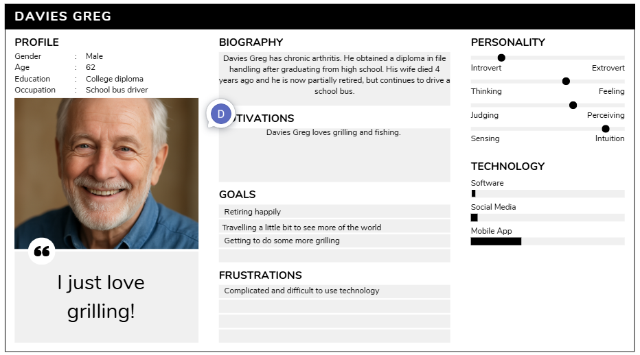
Persona 1
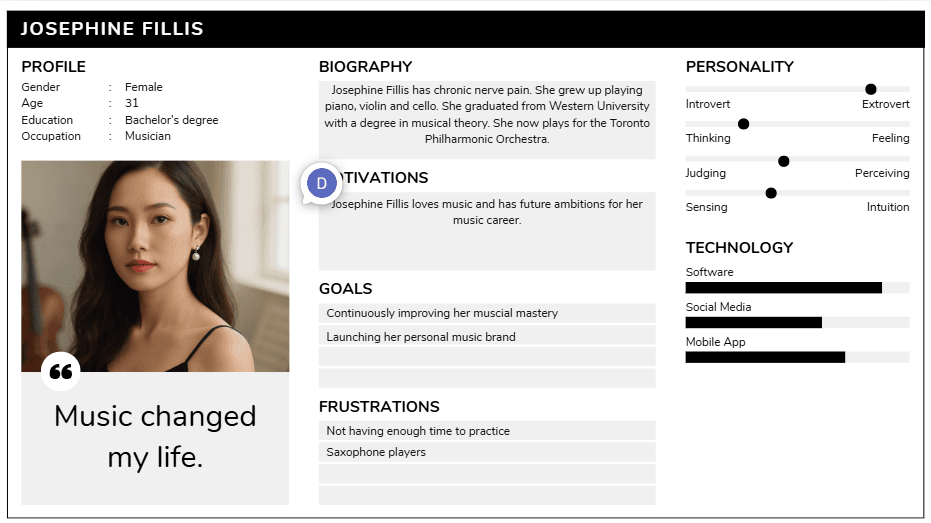
Persona 2
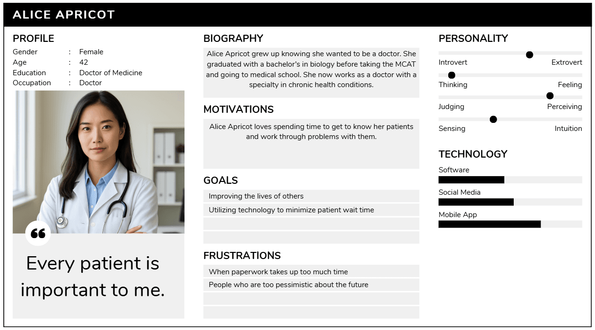
Persona 3
User Journey Map
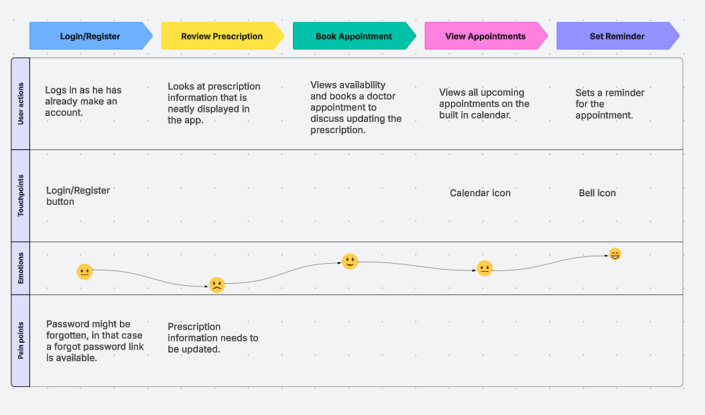
User journey map
Design Process
Sketches
Simple sketches with paper and pencil.
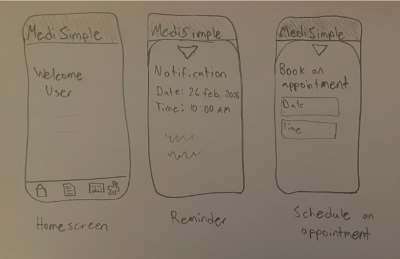
Sketches
Wireframes
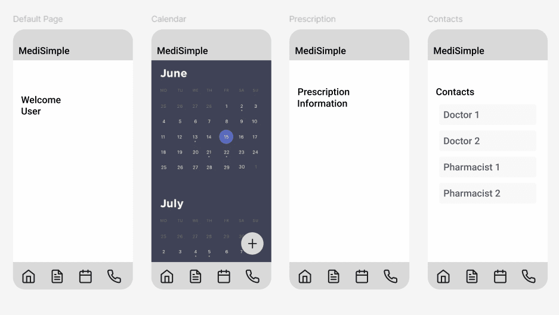
Wireframes for the login, home, calendar and prescription information pages
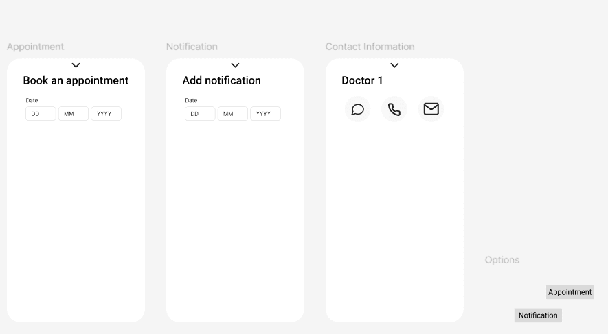
Wireframes for the contact page and pop up components
Prototype
To test out my complete figma prototype click here.
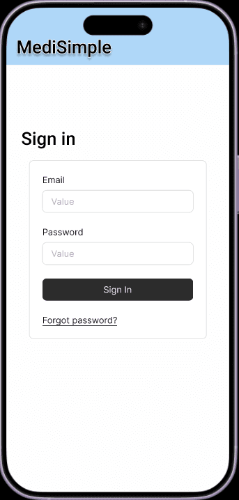
Login page
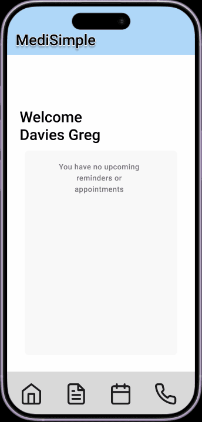
Home page
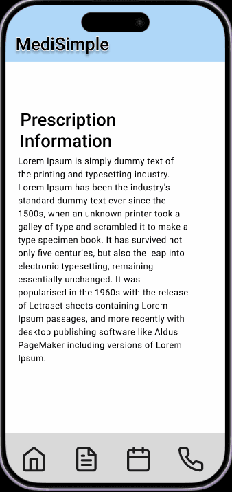
Prescription information page
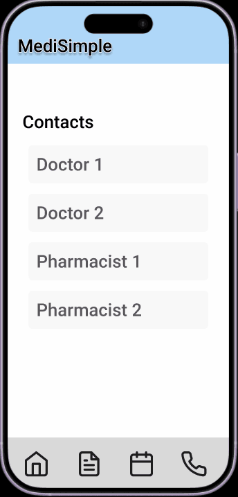
Contact page
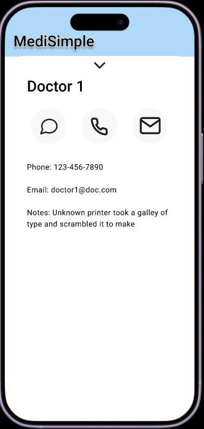
Specific contact pop up
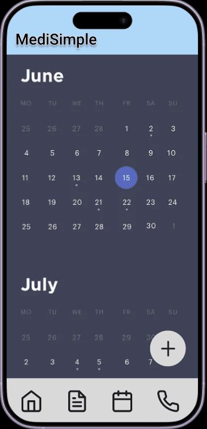
Calendar page
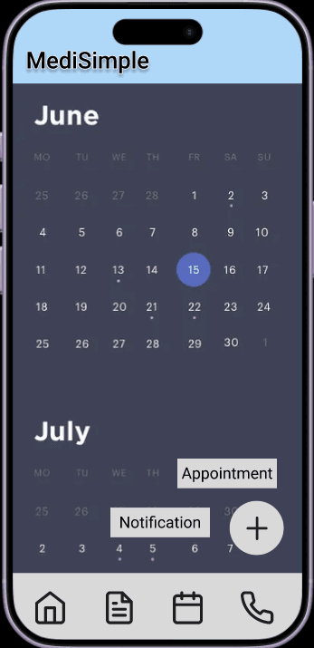
Create choice pop up
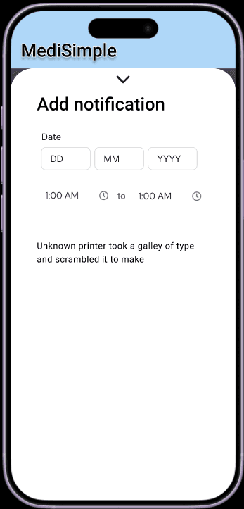
Add notification
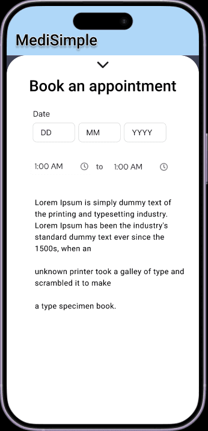
Add an appointment
Usability Testing
My goals are to improve the app and its services. The user tasks are the following: create a new reminder, schedule a doctor appointment, contact a doctor or other medical professional by text and finally, view prescription information. I would collect feedback by watching users' interactions with the prototype and by interviewing users after the test. I would take that feedback and use it to iteratively improve the application. This iterative approach would include fixing issues and conducting more usability testing afterwards.
Reflection and Conclusion
This UX design process helped me identify user needs by allowing me to conduct my own research and build my own product. Through this process I saw the challenges that users might have with all sorts of mobile apps. Plus I gained hands-on experience with user interface/experience tools. One of my challenges was that I did not know enough people to interview for this project. The other challenges I experienced during the design process were almost all derived from a lack of experience using user experience design tools. I had never used Figma at all before and I had only a small amount of experience with Lucid and Canva.